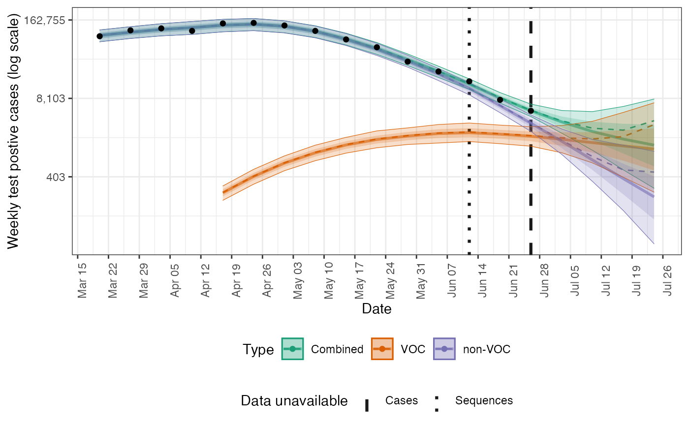

Plot the posterior prediction for cases
plot_cases(
posterior,
obs = NULL,
forecast_dates = NULL,
all_obs = FALSE,
col = NULL,
log = TRUE
)Arguments
| posterior | A dataframe of posterior output as produced by
|
|---|---|
| obs | A data frame of observed data as produced by |
| forecast_dates | A data.frame in the format produced by
|
| all_obs | Logical, defaults to |
| col | A character string denoting the variable to use to stratify the ribbon plot. Defaults to "type" which indicates the data stream. |
| log | Logical, defaults to |
Value
A ggplot2 plot.
See also
Plotting functions
add_forecast_dates(),
plot_default(),
plot_growth(),
plot_pairs(),
plot_posterior(),
plot_rt(),
plot_theme(),
plot_voc()
Examples
posterior <- fv_example(strains = 2, type = "posterior")
# default with log transform
plot_cases(posterior)

# without log transform
plot_cases(posterior)